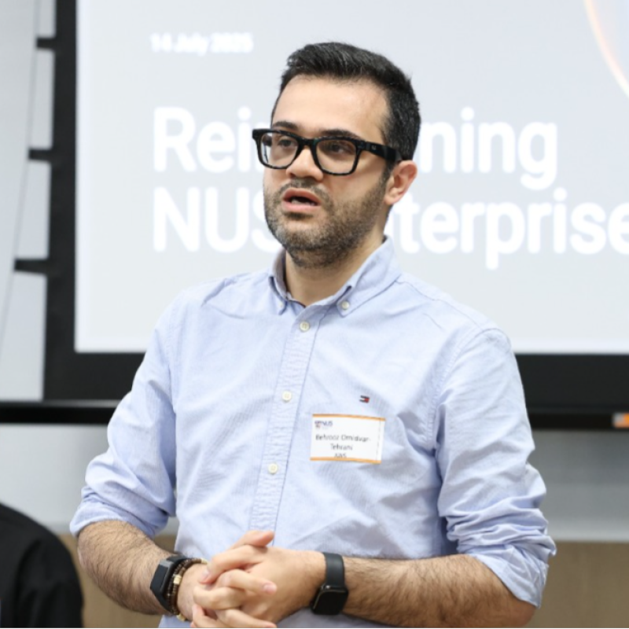
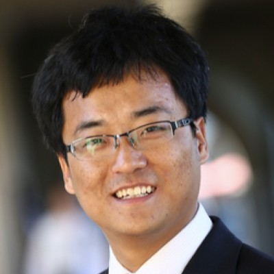

Keynote Speakers

Wei Wang
UCLA

Chandan Reddy
Professor
Virginia Tech
Scientific Reasoning with Foundation Models: From Mechanistic Hypotheses to Active Experimentation
Recent reasoning systems plan, invoke tools, and iteratively refine their solutions, with striking progress in coding, mathematics, and decision making. Scientific discovery offers a distinctive and demanding test of these capabilities because it requires not only solving a posed problem, but reasoning about plausible hypotheses, discriminating evidence, experiment selection, and revision as observations accumulate...
Scientific Reasoning with Foundation Models: From Mechanistic Hypotheses to Active Experimentation
Recent reasoning systems plan, invoke tools, and iteratively refine their solutions, with striking progress in coding, mathematics, and decision making. Scientific discovery offers a distinctive and demanding test of these capabilities because it requires not only solving a posed problem, but reasoning about plausible hypotheses, discriminating evidence, experiment selection, and revision as observations accumulate. In this talk, I frame scientific discovery as mechanistic reasoning. Many AI-for-science systems operate on fixed datasets and focus on a single stage of discovery, such as fitting an equation, screening a candidate, or optimizing a property. In contrast, scientific reasoning requires a closed loop: forming interpretable hypotheses, testing them against evidence, remembering confirmed and falsified explanations, and selecting new observations that reduce uncertainty.
Within this framing, large language models and foundation models can serve as reasoning components inside scientific agents. These agents represent hypotheses as symbolic equations, programs, causal structures, or candidate designs; refine them using structured search and data-driven feedback; and reason about what experiments to perform next. This perspective also exposes a central challenge: distinguishing genuine discovery from the recall of memorized knowledge, motivating benchmarks that test mechanism recovery, out-of-distribution generalization, and memorization-resistant reasoning.
Active experimentation then emerges as a key step toward next-generation scientific reasoning systems. Fixed datasets can leave multiple mechanisms equally consistent with current observations. By choosing experiments where competing hypotheses make different predictions, closed-loop agents can reduce identifiability gaps and improve sample efficiency. The talk closes with a perspective on autonomous laboratories where reasoning agents make hypotheses explicit, testable, and reproducible while accelerating human scientific reasoning.
Bio
Chandan Reddy is a Professor in the Department of Computer Science at Virginia Tech. He received his Ph.D. from Cornell University and his M.S. from Michigan State University. His primary research interests are Generative AI and Trustworthy Machine Learning, aimed at creating robust, fair, and explainable models for Scientific Discovery and Real-World Impact. Dr. Reddy's research has been funded by organizations such as the NSF, NIH, DOE, DOT, and various industries. He has authored over 200 peer-reviewed articles in leading conferences and journals. He received several awards for his research work including the Best Application Paper Award at the ACM SIGKDD conference in 2010, the Best Poster Award at the IEEE VAST conference in 2014, and the Best Student Paper Award at the IEEE ICDM conference in 2016. He was also a finalist in the INFORMS Franz Edelman Award Competition in 2011. He serves (or has served) on the editorial boards of journals such as ACM TKDD, ACM TIST, NPJ AI, and IEEE Big Data. He is a Senior Member of the IEEE and a Distinguished Member of the ACM. More information about his work is available at https://creddy.net.

TBD
Invited Speakers
Junjie Tang
Sr. Principal
AWS
Talk Abstract
Large language model coding agents exhibit impressive reasoning capabilities, yet their reliability on real-world software engineering tasks remains inconsistent. We present evidence that the quality of agent reasoning is as much a function of the reasoning environment as it is of the underlying model...
Talk Abstract
Large language model coding agents exhibit impressive reasoning capabilities, yet their reliability on real-world software engineering tasks remains inconsistent. We present evidence that the quality of agent reasoning is as much a function of the reasoning environment as it is of the underlying model. Our approach, harness-guided reasoning, wraps coding agents in a 4-pillar structural constraint framework that provides feedforward guides (pre-reasoning constraints) and feedback sensors (post-reasoning correction signals), enabling iterative refinement without modifying model weights or prompts.
We evaluate this approach using AgentCorp, a multi-agent software development simulation where hierarchical LLM teams execute 10-day engineering sprints across three enterprise domains (healthcare/HIPAA, payments/Stripe, robotics/CDK). In controlled experiments comparing unconstrained agents against harness-governed agents using identical models (Claude Opus on Amazon Bedrock), we observe test pass rates improving from baseline to 99-100% in two domains, with the harness acting as a reasoning scaffold that catches errors through structured planning checkpoints and iterative tool-use feedback loops.
Most strikingly, we demonstrate that structured reasoning constraints can enable emergent discovery: in an NKI kernel optimization task on AWS Trainium, an agent operating within a constrained compile-profile-reason loop that reduced kernel latency from 67ms to 6.2ms autonomously discovered a novel K-scaling optimization, scaling the Key tensor instead of the Query tensor to reduce SBUF memory pressure by 4MB at 16K sequence length. This optimization, not documented in any existing literature, emerged from 6 rounds of iterative refinement guided by hardware profiling feedback, illustrating how structured reasoning environments unlock capabilities that single-shot reasoning cannot achieve.
Bio
Junjie Tang is a Sr. Principal at AWS with 9 years of experience driving AI adoption across enterprise customers. His research focuses on agentic AI systems, multi-agent coordination, and hardware-aware kernel optimization on AWS Trainium. He leads the development of AgentCorp (multi-agent software simulation), harness-engineering-kit (agent governance framework), and kernel-forge (NKI kernel generation on Trainium). His blog on NKI agent optimization, “Beating Claude Opus 4.5 at Kernel Generation with a 3B-Active RL Agent”, demonstrated that constrained iterative reasoning can outperform frontier models at hardware-level tasks.

Behrooz Omidvar-Tehrani
Senior Applied Scientist
AWS
Talk Abstract
AI coding agents have evolved from stateless code completers into persistent systems that plan, use tools, self-debug, and collaborate with developers. Building such agents demands more than a powerful language model...
Talk Abstract
AI coding agents have evolved from stateless code completers into persistent systems that plan, use tools, self-debug, and collaborate with developers. Building such agents demands more than a powerful language model and requires reasoning that learns from experience, memory that carries knowledge across sessions, and interaction models that keep humans in control wherever needed. As these agents move from generating code to owning entire development workflows, the real challenge shifts from capability to trust. Generation is largely solved. What remains is alignment: can agents build what developers actually meant, self-correct reliably, grow from past interactions, and stay consistent over time? This talk navigates the journey from language models to fully agentic coding systems, weaving together the roles of reasoning, self-correction, continual learning, memory, and human-AI collaboration in shaping agents that not only write code but earn the trust of the developers they serve.
Bio
Behrooz Omidvar-Tehrani is a Senior Applied Scientist and Science Manager at AWS Agentic AI, working on next-generation coding agents and developer-focused AI systems. He has published across venues such as ICML, ICLR, CHI, CIKM, SIGMOD, and KDD. His research focuses on scalable, reliable, and human-centered AI systems for software engineering, with an emphasis on agentic reasoning, continual learning, and self-improving agents.

Dongjin Song
Associate Professor
University of Connecticut
Toward Interpretable and Trustworthy Time-Series Reasoning
Time-series foundation models have rapidly advanced forecasting in various applications, but most systems still lack the ability to reason over temporal patterns, multimodal context, retrieved evidence, and model choices. This talk presents a line of work toward interpretable and trustworthy time-series reasoning...
Toward Interpretable and Trustworthy Time-Series Reasoning
Time-series foundation models have rapidly advanced forecasting in various applications, but most systems still lack the ability to reason over temporal patterns, multimodal context, retrieved evidence, and model choices. This talk presents a line of work toward interpretable and trustworthy time-series reasoning. I will first discuss our vision for time-series reasoning, which emphasizes faithful reasoning paths, multimodal context, and system-level evaluation; Next, I will introduce TimeXL, an explainable multimodal framework that combines prototype-based temporal evidence with LLM agents for prediction, reflection, and refinement, and TimeRouter, a lightweight routing framework that adaptively selects or combines frozen time-series foundation models through discriminative routing, selective gating, and ensemble fallback. I will also briefly discuss how retrieval-augmented models such as TS-RAG can complement these systems by grounding forecasts in historical exemplar trajectories. Together, these works suggest a path from standalone forecasting models toward agentic temporal intelligence systems that can explain, adapt, and support reliable decision making.
Bio
Dongjin Song is an Associate Professor in the School of Computing at the University of Connecticut. Before joining UConn, he was a Research Staff Member at NEC Laboratories America in Princeton, New Jersey, from July 2016 to July 2020. He received his Ph.D. in Electrical and Computer Engineering from the University of California, San Diego in 2016. His research interests span machine learning, data science, deep learning, time series analysis, graph representation learning, and their real-world applications. His work has been published in premier conferences in artificial intelligence and data science, including NeurIPS, ICML, ICLR, KDD, ICDM, SDM, AAAI, IJCAI, CVPR, and ICCV. Four of his papers, DA-RNN at IJCAI 2017, HetGNN at KDD 2019, MSCRED at AAAI 2019, and Empowering Time Series Analysis with LLMs at IJCAI 2024, have been recognized as the most influential papers by PaperDigest.org. Dr. Song is the recipient of several prestigious awards, including the NSF CAREER Award in 2024, the Frontiers of Science Award in Computer Science in 2024, the UConn AAUP Excellence Award for Research and Creativity – Early Career in 2025, the AI 2000 Most Influential Scholar Award Honorable Mention in Data Mining in 2025, the NEC Faculty Research Award in 2025, and the Best Paper Award (3rd Place CCC Award) in the Blue Sky Track at ICDM 2025. He was also elected as one of 11 AAAI Senior Members in the Class of 2026. He serves as an Associate Editor for ACM Computing Surveys, Neural Networks, and Pattern Recognition, and has served as an Area Chair or Senior Program Committee member for top conferences such as NeurIPS, ICML, ICLR, AAAI, IJCAI, ICDM, CIKM, and PAKDD. He is also a co-organizer of the AI for Time Series workshop series at AAAI, IJCAI, ICDM, and SDM, and the Mining and Learning from Time Series workshop at KDD.
Minjae Lee
AI Researcher
FuriosaAI
Power-Efficient AI Reasoning for the Agentic Inference Era
Large language models are moving toward an agentic inference era, where they perform wider search and longer reasoning with tool interactions, thereby spending substantially more computation at test time. As this shift accelerates, model usage is rapidly increasing, and the energy required to run AI systems is becoming a fundamental bottleneck for keeping AI scalable...
Power-Efficient AI Reasoning for the Agentic Inference Era
Large language models are moving toward an agentic inference era, where they perform wider search and longer reasoning with tool interactions, thereby spending substantially more computation at test time. As this shift accelerates, model usage is rapidly increasing, and the energy required to run AI systems, from individual servers to large-scale data centers, is becoming a fundamental bottleneck for keeping AI scalable. In this talk, we introduce FuriosaAI's inference-first approach to this challenge, spanning the vertical stack from hardware architecture to software systems and deep learning algorithms. Toward high-performance, power-efficient inference with flexible programmability, we first discuss why power efficiency has become central to LLM deployment, and how FuriosaAI's Tensor Contraction Processor (TCP) architecture is designed to support efficient LLM inference through flexible dataflow and predictable performance. We then connect this hardware-software foundation to reasoning-focused algorithmic research, including inference-engaged training such as reinforcement learning and on-policy distillation, as well as inference scaling and acceleration methods such as speculative decoding and test-time compute scaling. The talk highlights how co-design across silicon, software, and algorithms can enable more capable, efficient, and scalable AI reasoning systems.
Bio
Minjae Lee is an AI Researcher on FuriosaAI's Algorithm team, working on agentic LLM inference. His research spans inference acceleration, scaling, and training for agentic LLMs, including speculative decoding, test-time compute scaling, and reinforcement learning. He also works on healthcare AI, including electronic health records and medical LLM applications. He received his M.S. in Artificial Intelligence from KAIST under Prof. Edward Choi and his B.S. in Industrial Engineering from KAIST, graduating Summa Cum Laude.
About FuriosaAI
FuriosaAI is building inference-first AI infrastructure. Its flagship RNGD accelerator, based on the Tensor Contraction Processor (TCP) architecture, is designed to deliver (1) high-performance execution, (2) power-efficient inference, and (3) flexible programmability for LLMs and multimodal models. By co-designing hardware, compiler, platform, and algorithms, FuriosaAI aims to make large-scale AI deployment practical for real-world data centers.